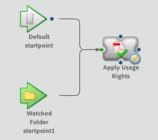

This Quick Start describes how to use the Reader Extensions
service to apply usage rights to a PDF document. Applying usage
rights to a PDF document allows Adobe Reader users to use interactive
features that are available in Adobe Acrobat. Interactive features,
such as commenting and the ability to save files locally, are not
available in Adobe Reader. For more information about the Reader Extensions
service, see
LiveCycle ES2.5 Services
.
For example, an organization has a process to gather feedback
about the content of PDF documents. Using Reader Extensions, additional
usage rights can be applied to the PDF document so that users can
provide comments using Adobe Reader. Users copy their PDF document
to a folder and then retrieve the PDF document with usage rights
applied to it from another folder.
An application, named
enablePDFApp
, implements the service
for the organization. To use the service, users copy the PDF documents
to a network folder named
\\LiveCycleES2Server\SendForReview\input
.
Users retrieve the PDF document with usage rights applied to it
from a network folder named
\\LiveCycleES2Server\SendForReview\readyForReview
.
Both folders reside on the LiveCycle server and are configured as
shared folders. This configuration used to invoke the service is
called a
watched folder
. A user ID of
readadmin
configured with
the
Services User
role is used to invoke the service using
watched folders. (See
Configuring watched Folders endpoints
in
LiveCycle ES2 Administration Help
.)
The enablePDFApp application includes a process, named
applyREPDF,
that includes
the following items:
-
An input and output
document
variable,
named
reOuputPDF
, that stores the PDF document. The process
is invoked with the PDF document as input. The PDF document is fetched
from the \\LiveCycleES2Server\SendForReview\input folder. The service
saves the output PDF document to the \\LiveCycleES2Server\SendForReview
folder.
-
The credential alias, named
REEXTEND
, is used to apply
the usage rights to the PDF document.
-
A Watched Folder start point.
-
An Apply Usage Rights operation (Reader Extensions service).
The process diagram for the applyREPDF process looks like the
following illustration:
